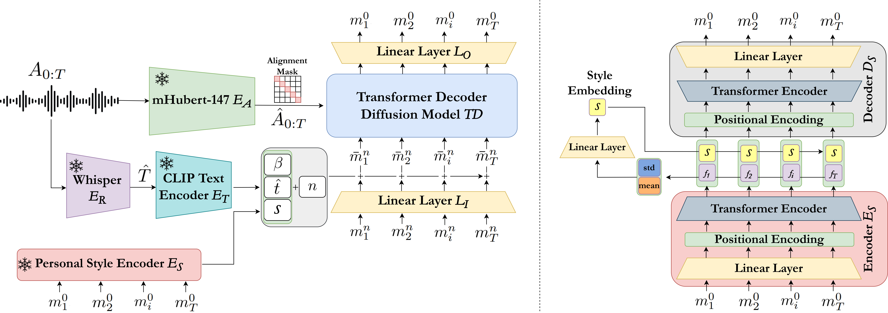

Polyglot combines four key components: a multilingual speech encoder, an automatic speech recognition (ASR) module, a text encoder, and a style encoder.
Given an input audio sequence, mHuBERT extracts temporal speech features, Whisper produces the corresponding transcript, and a text encoder (CLIP) generates language-aware embeddings.
In parallel, a style embedding is computed from a reference motion sequence using a dedicated style encoder, capturing speaker-specific dynamics.
These signals are jointly fused within a Transformer-based diffusion decoder, which is conditioned on identity, language, style, and the diffusion timestep.
The decoder progressively denoises a noisy motion sequence to produce the final facial animation, enabling temporally coherent and expressive results.
The style encoder is trained separately using an autoencoding objective, where a decoder reconstructs motion sequences from the extracted style embedding.
Once trained, the style encoder is frozen and used during Polyglot training to ensure consistent preservation of personal speaking style.